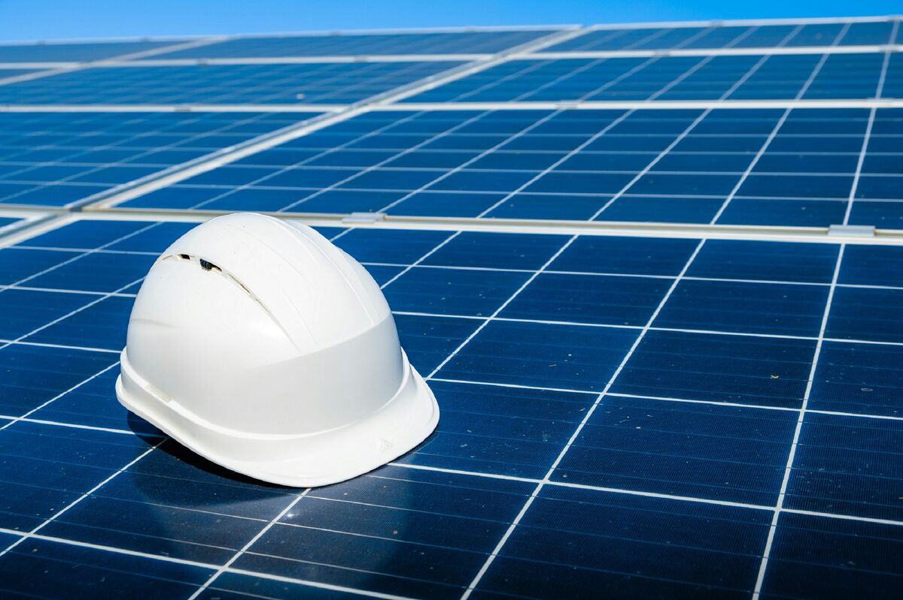
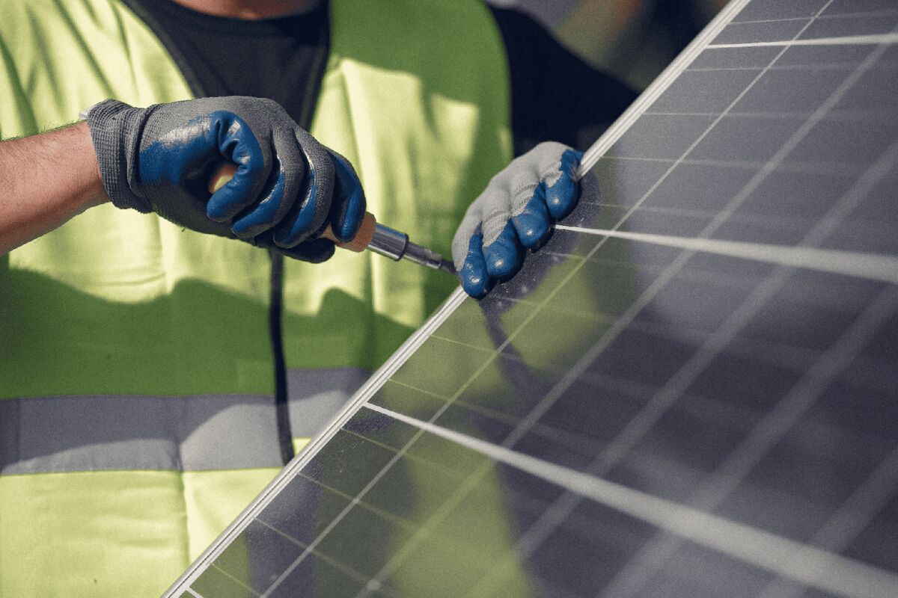

En una planta, el consumo mensual es sólo una parte de la historia.
Picos de demanda, turnos de producción, cargas críticas, crecimiento previsto y restricciones de infraestructura pueden ser tan importantes como la energía total consumida.
Demanda
Potencia, picos, simultaneidad y horarios que condicionan la operación.
Continuidad
Qué cargas no pueden detenerse y qué costo tiene una interrupción.
CAPEX
Cómo comparar inversión energética con otras necesidades de la planta.



Autoconsumo, respaldo, eficiencia o una combinación.
La solución no tiene por qué empezar y terminar en fotovoltaica. Una planta puede requerir priorizar consumo diurno, revisar picos, asegurar cargas críticas o mejorar una instalación existente.
Solar on-grid
Cuando existe consumo diurno relevante y la red cumple el rol operativo esperado.
Híbrido / respaldo
Cuando la continuidad de ciertas cargas justifica estudiar almacenamiento o estrategias adicionales.
Performance
Cuando ya existe infraestructura y el problema es entender si está rindiendo correctamente.
La ingeniería tiene que convivir con producción, no interrumpirla.
Relevamiento, diseño e implementación deben considerar ventanas de trabajo, seguridad, tableros existentes y criticidad de procesos.
1. Relevamiento
Facturas, operación, cargas, infraestructura y restricciones de planta.
2. Modelado
Escenarios de generación, consumo y arquitectura comparados con criterio homogéneo.
3. Ingeniería
Diseño compatible con condiciones eléctricas y operativas reales.
4. Implementación y seguimiento
Coordinación, puesta en marcha y revisión de performance.
Antes de analizar una planta industrial.
¿Hace falta tener medición horaria para empezar?
No siempre. Se puede comenzar con facturas y horarios de operación, pero una curva de carga mejora mucho el análisis cuando está disponible.
¿Un techo grande garantiza una buena oportunidad solar?
No. La superficie ayuda, pero la decisión depende también de consumo, horarios, estructura, sombras, red y objetivo de inversión.
¿Qué pasa si la planta va a ampliar producción?
El crecimiento debe incorporarse al modelo. Dimensionar sólo con consumo histórico puede dejar una solución desalineada con la operación futura.
Una decisión energética tiene que sostener la operación.
Si el proyecto no entiende producción, demanda y restricciones, el número de paneles dice poco.
Revisemos el contexto de tu planta.
Con facturas, horarios y una conversación operativa podemos definir el siguiente paso.
Agendar diagnóstico